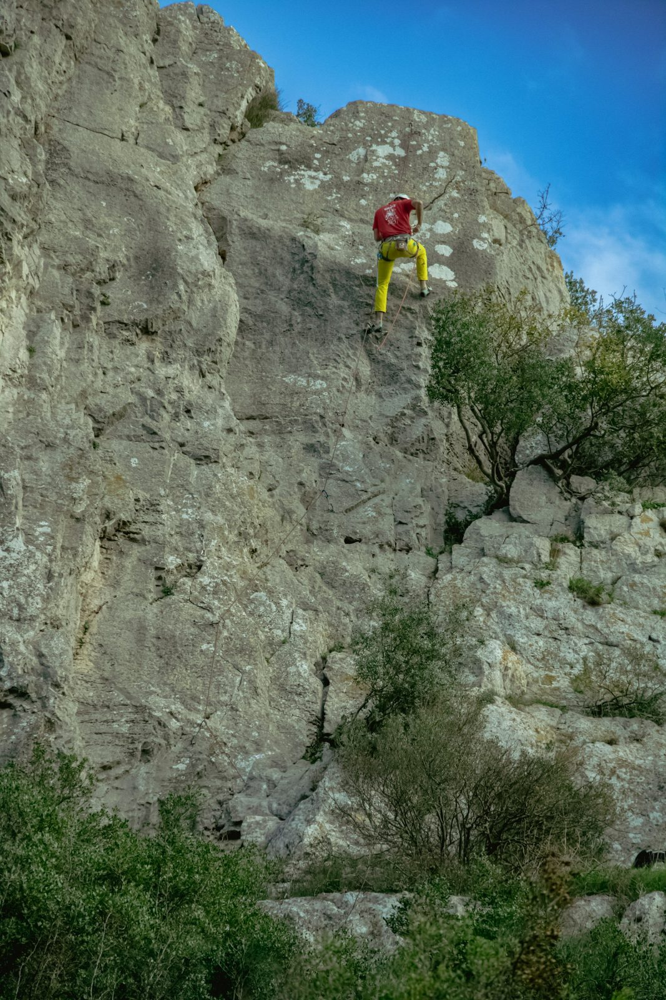
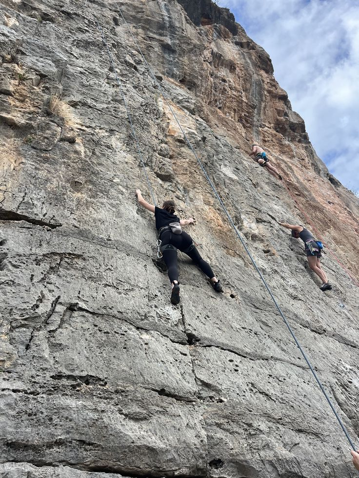
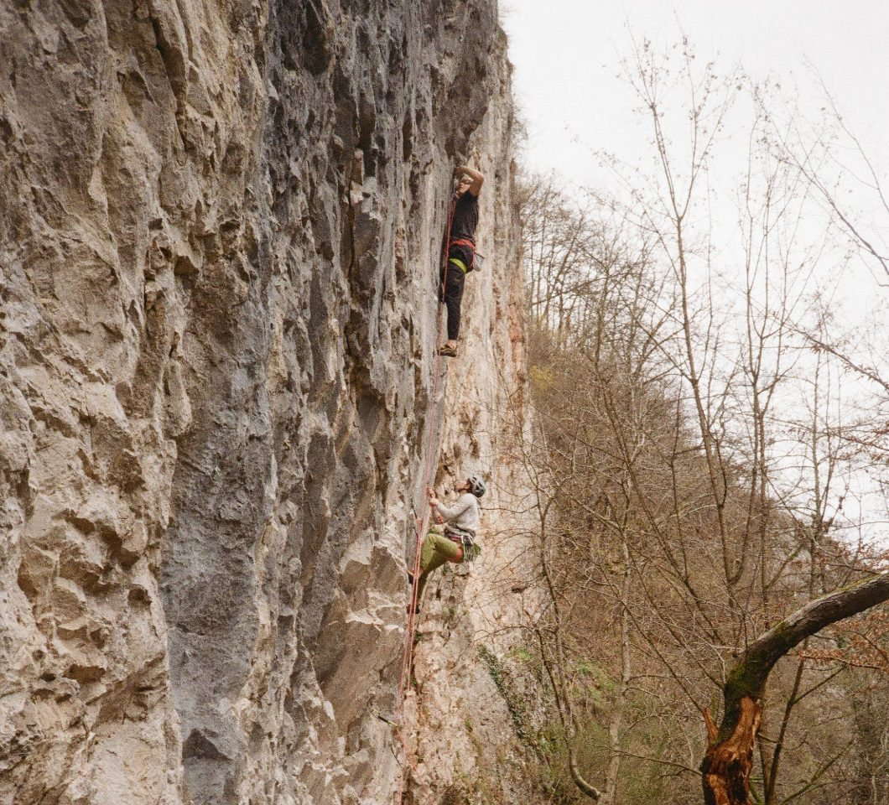
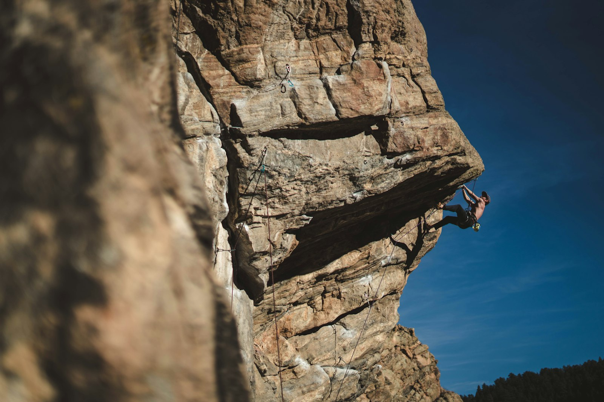
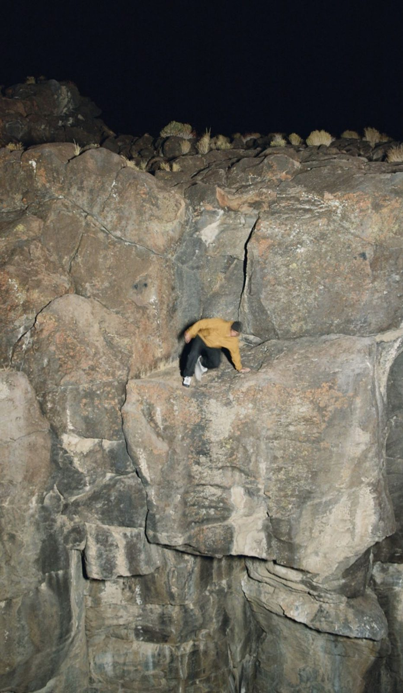
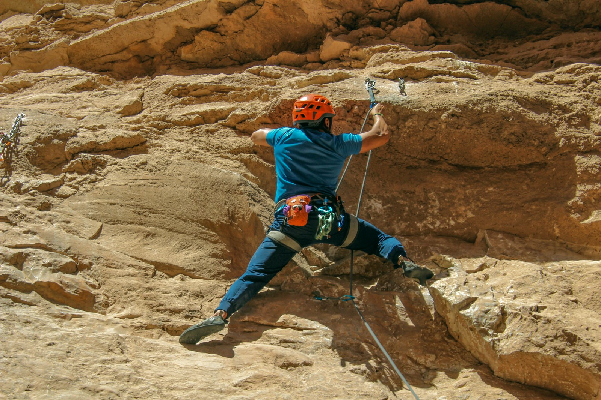

0 m
Walk the quarry floor
The haul road runs from the car park past six walls to Far Bay, 640 m in. Every wall is within 12 minutes. 48 routes, 41 bolted and 7 trad.
All wallsMonday 12 October, 09:00 BST
0 m
The haul road runs from the car park past six walls to Far Bay, 640 m in. Every wall is within 12 minutes. 48 routes, 41 bolted and 7 trad.
All walls
120 m
In the sun until 17:15. Dry.
Gatehouse Slab topo
240 m
In the sun until 17:10. Dry.
Long Wall topo
330 m
Sun 10:30–17:00. Dry.
Ledge Wall topo
430 m
Sun 12:05–16:45. Dry.
Raven Buttress topo
520 m
In the shade all day. Wet until about 12:42.
Cold Corner topo
640 m
In the sun until 13:50. Dry.
Far Bay topoBolted routes use French grades. Trad routes are placed at their nearest French equivalent.